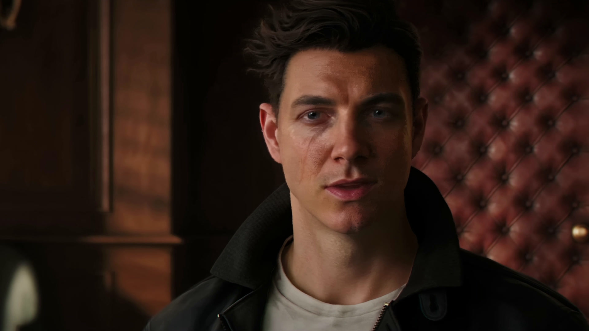
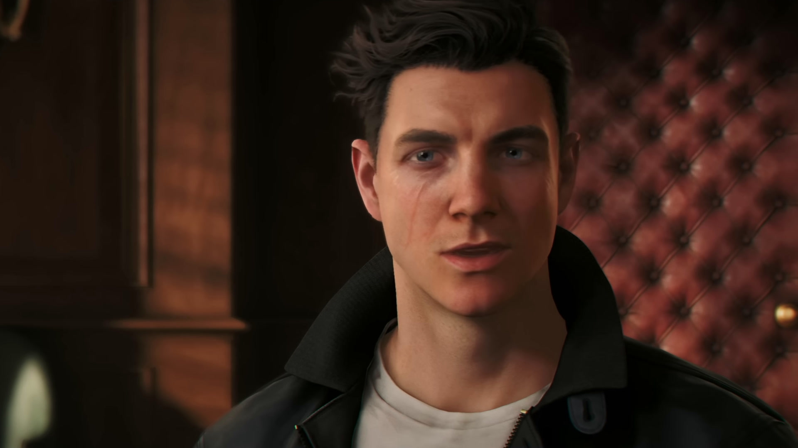
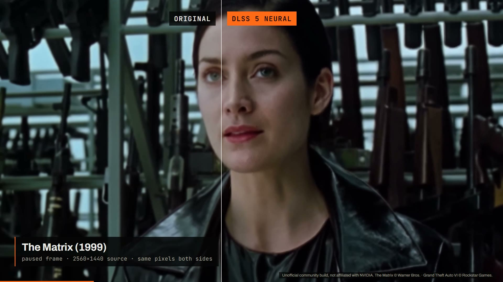

Press D and keep watching
Rendering is not an export queue. Press D at any point and playback continues on rendered frames a few seconds later, while the session keeps filling in the rest of the video — nearest the playhead first.



Point a video, photo or GIF at NVIDIA's DLSS 5 neural renderer and keep watching while it works. The original stays beside the render, on the same frame, so you judge it on the picture instead of the claim.
Windows · RTX card · driver 610.47+. Community project, not an NVIDIA product.
Both plates above are one frame: on the left as the source file decodes it, on the right the same frame out of the render the player wrote for that file, cropped identically. Nothing was retouched, sharpened or colour-corrected. The two differ by 31.7 dB PSNR — the renderer is rebuilding skin, hair and light across the face, not laying a filter over the whole picture.
Source2560×1440 VP9 · 30 fps · 166.733 s · 5,002 frames
Session4,948 of 4,948 frames verified, from 1.80 s · failure none · lock ok
MachineRTX 4080 SUPER · driver 610.47 · player v0.25.0 · RenoDX 6.5.3 · DLSS-NR 310.8.0
SettingsIntensity, Local tone and Local structure 2.0 (defaults 1.0) · upscaling off
Each pair is one frame: the source, and the same frame from the player's render of it. Flip swaps the whole picture between the two; 1:1 opens the captured file itself, one image pixel to one screen pixel, so nothing on this page is doing the resizing. Not every source moves as much: The Matrix pair differs by 5.2 levels on average, GTA VI's by 9.5.


Rendering is not an export queue. Press D at any point and playback continues on rendered frames a few seconds later, while the session keeps filling in the rest of the video — nearest the playhead first.
Land on rendered frames and playback continues on them wherever they are on the timeline. Land somewhere nobody has rendered and the original plays at once while the render moves there. Nothing already rendered is thrown away.
Compare as a split, a wipe or a blend without moving the playhead, and step frames on either view. Change a neural setting while paused and that frame is re-rendered immediately, so you decide on the picture.

Renders stay on disk until you clear them or the drive runs low. Reopen a film weeks later and a render of the whole film is still attached, reused whenever the source, the runtime and the neural settings all still match — so what you reopen is what you rendered.

The renderer works on whatever the player can open, and what you render can be written back out to a file. Nothing is uploaded: the work happens on your own GPU and the cache sits on your own disk.
The Matrix and Grand Theft Auto VI, each source against the player's own render of it: paused frames wiped across the face, then playback with the divider held still. Same frames, same crop on both sides. No sound.

Poster: frame 110 of the video. The Matrix — Warner Bros.; Grand Theft Auto VI — Rockstar Games.
{{VERSION_LABEL}}, published {{RELEASE_DATE}}. Every build is listed on the release page with its checksum.
neural-runtime/ next to the executable.DLSSVideoPlayer.exe.The neural runtime is a modified community build of NVIDIA's, not a redistribution of a signed NVIDIA package. Nobody is in a position to sign it, so it ships unsigned and says so. If that is not acceptable to you, take the core package and supply your own runtime.
Yes, for neural rendering, along with NVIDIA driver 610.47 or newer. The player itself opens and plays video without one; the render is what needs the hardware.
No. Rendering runs on your own GPU and the cache is on your own disk. The only network traffic is fetching a YouTube link if you paste one.
It depends on the card, the resolution and the clip. The point of the design is that you do not wait for it: playback joins the render a few seconds after you press D, and the rest fills in while you watch. Measured figures, each with the card and the build it came from, are in the README’s limits.
No. Neural rendering rebuilds detail in the frames a video already has; frame generation makes new frames between them, so a 30 fps clip becomes 60. It runs as a conversion rather than during playback — DLSS > Generate frames writes a new file, shows the time left, then switches to the result where you were watching. The multiple is yours to set, from 2× up to as many as your display can show evenly. The two features are independent: use either, or both.
Yes — PNG or JPEG for photos, GIF for animations, MP4 or MKV for video. MKV keeps the source audio, subtitles and chapters without re-encoding them.